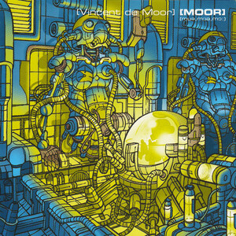

Vincent de Moor - Moor
Vincent de Moor, one of the undersung heroes of trance, released his second and final album, Moor, in 2000. I personally think it's a fantastic trance album, with just enough classic cliches that it works but doesn't get tired. And like his previous album, there's a number of extra bits to sort out.
To start with, the album itself was released in two different forms; a six-track double-record set on vinyl, featuring six new full-length, unmixed tracks, and the CD release which featured these tracks mixed with other new originals and three previously released tracks. To compensate between these versions, we'll start by having the first disc be the CD release, and the second disc containing the full-length versions of tracks from the first disc, like the vinyl release. Obviously the six tracks on the vinyl release will be included here, but also the three previously released tracks, as they all have full unmixed versions available.
CD 2: Full-length versions
| No. | Title | Original release | Length |
|---|---|---|---|
| 1 | Worlds of Doubt | Vinyl release | 6:25 |
| 2 | Shamu | "Shamu" single, 1998 | 5:56 |
| 3 | Olympia | Vinyl release | 5:51 |
| 4 | Between 2 Fires | 7:15 | |
| 5 | Feelin On | 5:48 | |
| 6 | Carte Blanche | "Carte Blanche" Veracocha single, 1999 | 7:04 |
| 7 | Eternity | Vinyl release | 6:53 |
| 8 | United 4 Ever | 6:18 | |
| 9 | Lover Lady | "Lover Lady" Fix to Fax single, 1998 | 7:47 |
| 58:14 |
A few things to note; "Veracocha" was a collaboration between de Moor and Ferry Corsten - the collaboration's one single, "Carte Blanche", is de Moor's biggest hit and one of my favourite songs ever, so I'd imagine when making the CD version they saw fit to include it even if it wasn't entirely his (Corsten in the past has taken the credit for the song's fantastic melody). "Fix to Fax" on the other hand is just an alias that de Moor used. Also, "Between 2 Fires" was technically originally released as a single in 1999 before the album, but I've left that out for simplicity's sake.
Now onto the bonus tracks themselves. In 2000, de Moor released three EPs as well as this album, and while one of them we'll deal with later, one was called The Additional Works and the other The Additional Works Part II. And then in 2003, Additional Works III was released. Naturally, these three seem to naturally want to be together. The only other track to include is the song "Clock Rising", which was included on the re-release of the first Additional Works when it became available on online music stores.
CD 3: The Additional Works
| No. | Title | Original release | Length |
|---|---|---|---|
| 1 | Fly Away | The Additional Works EP, 2000 | 8:10 |
| 2 | Green Heaven | 7:44 | |
| 3 | Sun Flowers | 6:50 | |
| 4 | Proceed | The Additional Works Part II EP, 2000 | 7:22 |
| 5 | Artic Duction | 8:07 | |
| 6 | Skindeep | 7:47 | |
| 7 | Biophysica | 7:04 | |
| 8 | Yellow Subway | Additional Works III EP, 2003 | 6:42 |
| 9 | Nebula | 7:32 | |
| 10 | Clock Rising | The Additional Works EP re-release, 2007 | 5:53 |
| 73:19 |
Again some notes, The Additional Works EP originally had an external remix on it which I've cut because of our rules on external remixes, and Additional Works III originally featured "No Hesitation", a song which had already been released on that other EP from 2000 (just a second we'll get to it), which we'll include there instead of here.
Now, onto that other EP; the Deflection EP was released in 2000 alongside the album and the two EPs mentioned earlier. And since there's no other EPs, now we can dig into the B-side remixes (well, those made by de Moor) surrounding this album. Firstly, there is one original B-side from this period, the B-side to "Carte Blanche", "Drafting". After that, there is a "Less Vocal" mix of "Between 2 Fires", two remixes of "Eternity" which was given a vocal version, and "Fly Away" from The Additional Works was released as a single and became a big hit, with three remixes to include. There is a bit of confusion, but the original limited 2000 single release had a vocal mix, and then a new vocal was recorded for the track's big single release in 2001. I've included the original 2000 vocal mix, the extended radio edit with the new vocal, and the ambient mix. Two remixes which feature the new vocal, the "Can You Hear Me" and "Let Me Fly" versions, aren't included as they don't fit on the disc.
CD 4: Deflection EP and more
| No. | Title | Original release | Length |
|---|---|---|---|
| 1 | No Hesitation | Deflection EP, 2000 | 6:06 |
| 2 | Don't Let Go | 9:16 | |
| 3 | Believin' in My Mind | 6:08 | |
| 4 | Silent Dance | 7:54 | |
| 5 | Drafting | "Carte Blanche" Veracocha single, 1999 | 6:03 |
| 6 | Between 2 Fires (Original Less Vocal Mix) | "Between 2 Fires" single, 1999 | 6:17 |
| 7 | Eternity (Forever) [The Park Extended Version] | "Eternity (Forever)" single, 2000 | 5:11 |
| 8 | Eternity (Forever) [Dream On Mix] | 3:32 | |
| 9 | Fly Away (Vocal Mix) | "Fly Away" single, 2000/1 | 8:08 |
| 10 | Fly Away (Extended Radio Version) | 5:48 | |
| 11 | Fly Away (Ambient Mix) | 7:50 | |
| 73:20 |

Released: 2000
Length: 73:51
Genre: Trance
Personal rating: 10 / 10
Favourite song: "Carte Blanche"
- "Worlds of Doubt" – 6:22
- "Shamu" – 5:34
- "Arena de Olympia" – 0:43
- "Olympia" – 5:43
- "Between 2 Fires" – 6:30
- "I Know Your Dreams" – 6:34
- "Maindistance to the Sun" – 4:46
- "Feelin On" – 5:44
- "Carte Blanche" – 6:06
- "Human Mistery" – 7:55
- "Eternity" – 4:47
- "United 4 Ever" – 6:00
- "Lover Lady" – 4:12
- "Fin de Musique" – 2:55